Most conversations about India begin with scale.
People talk about crowds, traffic, noise, color, movement, and intensity. They describe railway stations overflowing with passengers, markets operating at full volume, and cities that seem to function according to rules invisible to outsiders. Even travelers who deeply love India often describe it as overwhelming before they describe it as comfortable.
Then they arrive in Indore.
The first surprise is not dramatic. Nothing announces itself immediately. There is no famous monument dominating the skyline. No single landmark that explains the city in one glance. Indore reveals itself through smaller details that become difficult to ignore after a few hours.
The sidewalks are cleaner than expected.
Public spaces look maintained rather than merely used. Waste bins appear where they are supposed to be. Streets feel organized. Traffic still exists — this is India, after all — but the atmosphere feels noticeably more controlled than many visitors anticipate before arriving.
For years, Indore has consistently ranked as India’s cleanest city in the national Swachh Survekshan surveys, becoming the country’s most frequently cited example of large-scale urban cleanliness.
What makes the achievement interesting is not the award itself. It is the fact that the city still feels intensely Indian while functioning very differently from the stereotype many foreign visitors carry with them.
The longer you stay, the more unusual the combination becomes.
Indore is clean, but it is not sterile.
It is organized, but never quiet.
It is modern, but deeply attached to food traditions, local markets, and everyday street life.
That combination is precisely why the city tends to stay in people’s memories longer than expected.
Why Indore Keeps Winning India’s Cleanliness Rankings
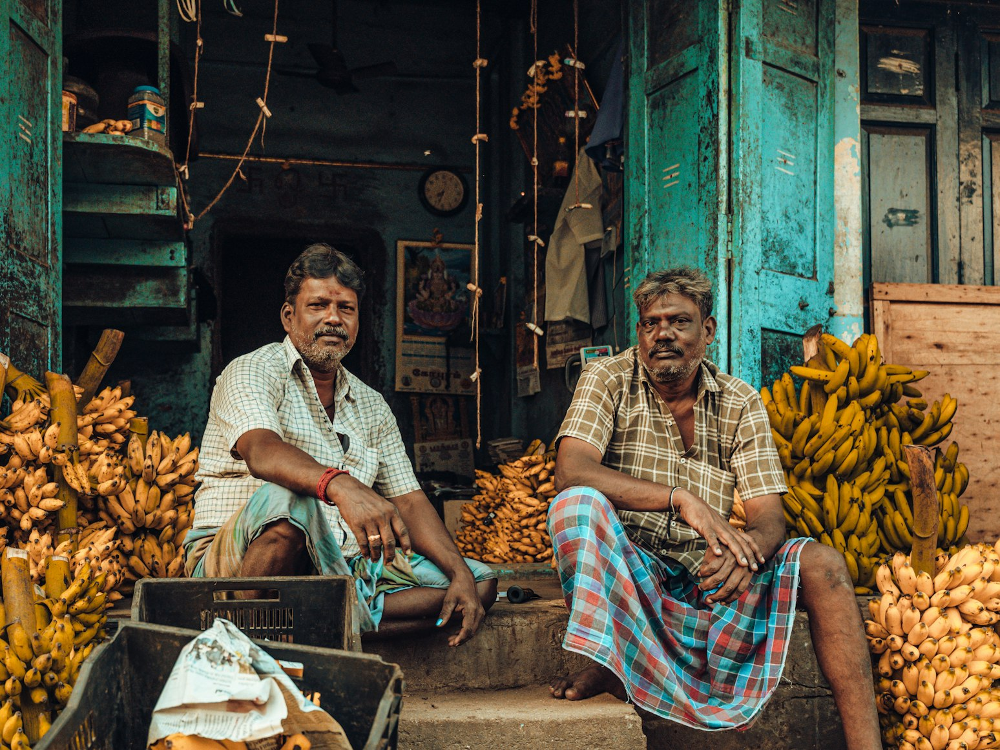
Visitors often assume the city’s reputation comes from unusually strict regulations or aggressive enforcement.
The reality appears more complicated.
Cleanliness in Indore has gradually become part of local civic identity. Municipal systems play an important role, particularly waste collection and segregation programs, but many residents genuinely seem invested in maintaining the city’s reputation.
Local media regularly covers cleanliness initiatives, and public participation has become one of the reasons Indore continues to perform well in national rankings.
This becomes visible in everyday situations.
Markets close at night and reopen remarkably clean the next morning. Public areas that host major festivals are cleaned almost immediately after celebrations end. Even busy commercial streets often look unexpectedly orderly compared with similarly sized cities elsewhere in the country.
The result is not perfection.
You will still encounter traffic, construction, dust, and the occasional chaos that accompanies any fast-growing Indian city. Yet the overall feeling remains noticeably different.
Visitors often spend their first day trying to understand why the city feels easier to navigate than expected.
Usually the answer is simple.
The urban environment creates less friction.
You spend less energy avoiding obstacles and more time noticing what is happening around you.
Rajwada Palace and the Historical Heart of the City
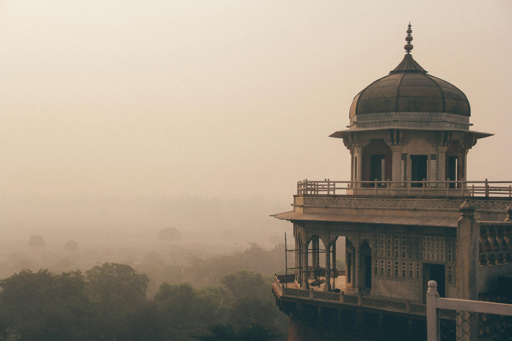
The center of Indore still revolves around Rajwada.
Built by the Holkar dynasty during the eighteenth century, the seven-story palace remains one of the city’s most recognizable landmarks. The structure combines Maratha architectural influences with later additions, reflecting the long history of a ruling family that helped shape much of central India.
Rajwada is not isolated behind large walls or separated from everyday life.
Instead, it sits directly inside the movement of the city.
Motorcycles pass nearby. Vendors sell snacks in surrounding streets. Families gather in the square outside. The palace functions less like a distant historical monument and more like a permanent participant in urban life.
This is often what makes Indian historical architecture feel different from similar sites elsewhere.
The buildings remain connected to the present.
Standing in front of Rajwada, you are not stepping outside the city. You are standing inside its most active layers at once.
Early morning is particularly rewarding.
Shopkeepers prepare for the day. Tea stalls begin serving customers. The light softens the palace façade. Before traffic fully arrives, the area briefly reveals a slower version of itself.
For photographers, it is one of the most visually satisfying moments in central Indore.
Lal Bagh Palace and the Unexpected Side of Central India
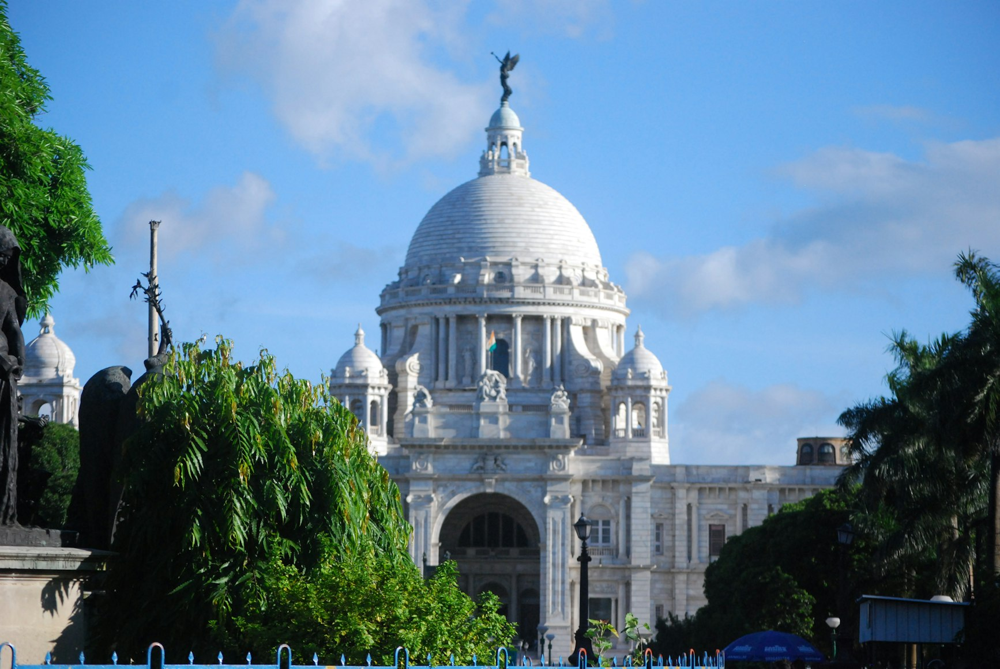
If Rajwada represents Indore’s older political history, Lal Bagh Palace reveals a very different chapter.
Constructed by the Holkar rulers between the late nineteenth and early twentieth centuries, the palace feels surprisingly European in many of its details. Italian marble, grand staircases, imported decorative elements, and elaborate interiors reflect the tastes of an aristocracy deeply connected to global trends of the period.
Many travelers arrive expecting forts, temples, and Mughal architecture.
They do not expect a palace whose entrance gates were modeled after those of Buckingham Palace.
The contrast makes the building fascinating.
It reveals how interconnected princely India had become during the colonial era. Wealthy royal families commissioned architects, imported furnishings, and participated in international cultural networks that stretched far beyond the subcontinent.
Today, walking through the palace offers a glimpse into a version of Indian history often overshadowed by larger narratives.
The building feels less theatrical than some royal residences in Rajasthan and more intimate in its atmosphere.
Instead of overwhelming visitors, it slowly reveals details.
A chandelier here.
An ornate staircase there.
A room whose proportions immediately suggest how differently power once looked.
Kanch Mandir and a Temple Built From Mirrors
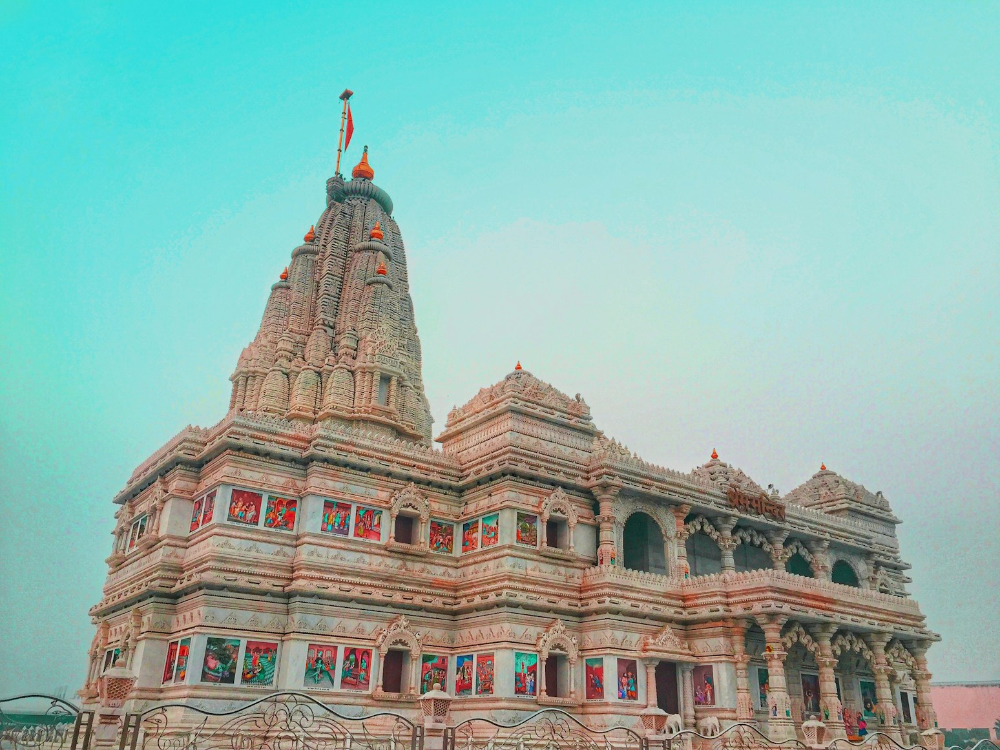
Among Indore’s most unusual landmarks is Kanch Mandir, the famous Jain temple covered with mirrors and colored glass.
From the outside, the structure appears relatively modest.
Inside, it becomes something else entirely.
Walls, ceilings, pillars, and decorative surfaces reflect light in countless directions. Small details repeat infinitely through mirrored patterns, creating an environment that feels surprisingly intricate despite the limited size of the building.
The temple was commissioned by Sir Seth Hukumchand Jain, one of the city’s most influential industrialists. Over time, it became one of Indore’s most distinctive religious landmarks.
Visitors unfamiliar with Jain traditions often arrive because of the architecture and leave with a deeper curiosity about the religion itself.
That is part of the temple’s appeal.
It rewards attention.
The longer you look, the more details emerge from the reflections.
The Real Atmosphere of Central Indore
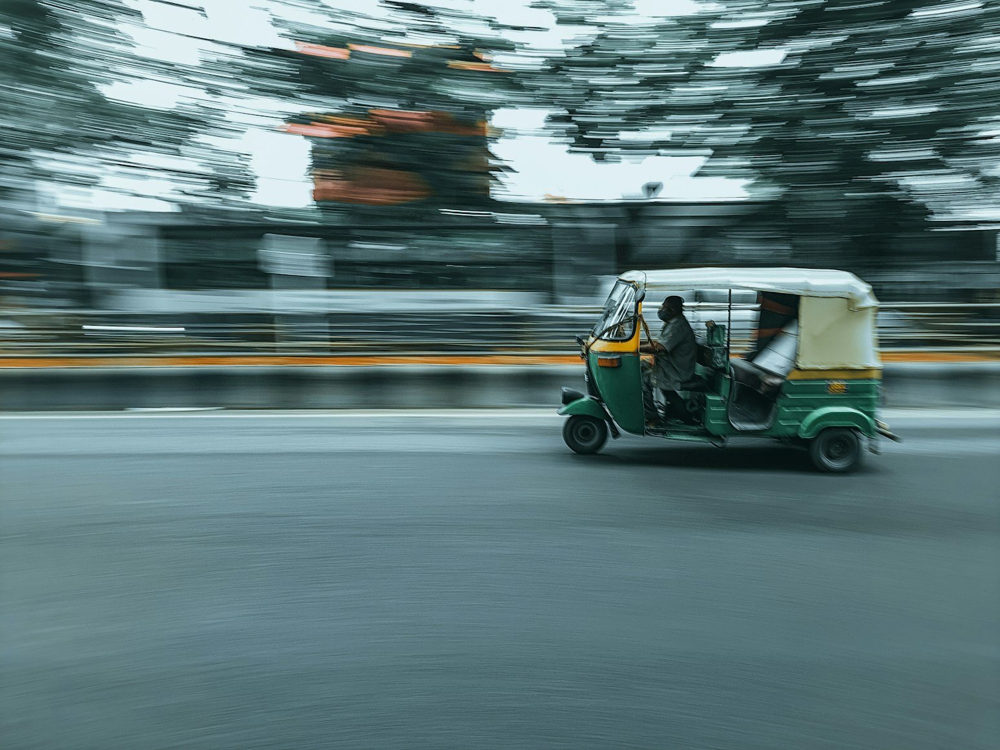
Travel guides often focus on attractions.
The more interesting question is how the city actually feels between attractions.
Indore’s center operates through layers.
There are old commercial streets where merchants have worked for decades. There are modern cafés filled with university students and young professionals. There are residential neighborhoods where morning routines unfold at a pace completely disconnected from tourism.
At sunrise, tea stalls become gathering places.
Newspapers arrive.
Breakfast vendors begin preparing poha.
Markets receive their first deliveries.
The city feels practical rather than performative.
By late afternoon, traffic increases and commercial areas become busier. Yet even during peak hours, many visitors notice something unusual.
People use public space extensively.
Sidewalk conversations stretch for half an hour. Families occupy parks in the evening. Street vendors develop long-term relationships with customers who return daily.
Indore feels less built around sightseeing and more built around living.
That distinction becomes increasingly valuable the longer you travel.
Sarafa Bazaar and the Food Culture That Defines the City
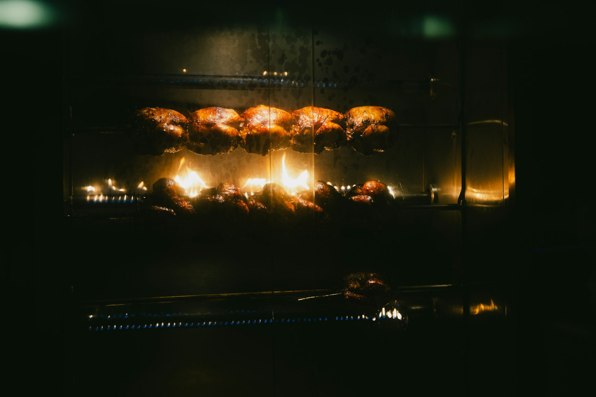
If there is one place that explains Indore better than any monument, it is Sarafa Bazaar after dark.
During the day, Sarafa functions primarily as a jewelry market.
At night, after many jewelry shops close, food vendors take over the area.
The transformation has become one of the most famous culinary experiences in India.
The atmosphere is energetic without feeling chaotic.
Families arrive together.
Students move between stalls.
Office workers stop for late dinners.
Visitors spend hours eating far more than they originally intended.
What makes Sarafa special is not a single dish.
It is variety.
The market allows travelers to experience the breadth of Indore’s food culture in one walk.
Poha and Jalebi: The Breakfast Combination That Confuses New Visitors
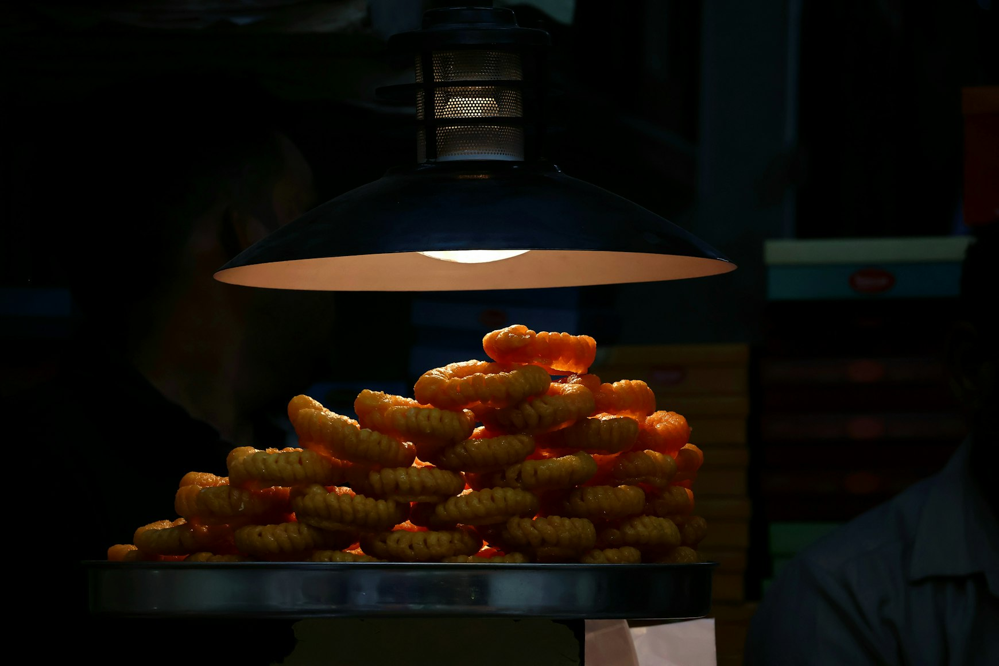
Many first-time visitors encounter an unexpected breakfast.
Poha and jalebi.
One savory.
One sweet.
Served together.
Poha consists of flattened rice cooked with turmeric, onions, spices, peanuts, and herbs. The texture remains light rather than heavy.
Fresh coriander, sev, lemon, and pomegranate seeds are often added before serving.
Alongside it comes jalebi.
Bright orange spirals of fermented batter fried and soaked in sugar syrup.
The combination sounds strange on paper.
In practice, it works remarkably well.
The sweetness of the jalebi balances the gentle spice and acidity of the poha, creating a breakfast pairing deeply associated with central India.
In Indore, many locals still begin their mornings exactly this way.
Bhutte Ka Kees and Garadu
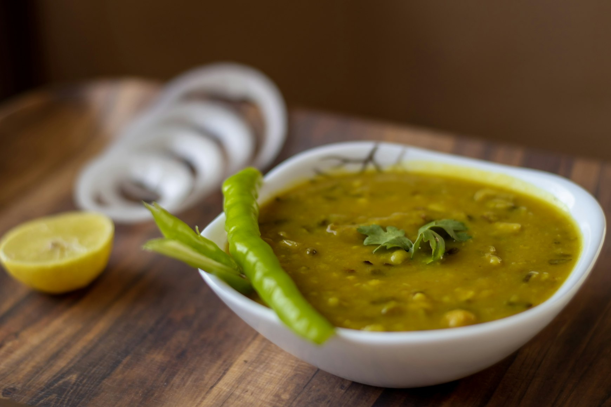
Indore’s street food scene contains dishes unfamiliar even to many Indian travelers.
Bhutte ka kees is one of the best examples.
The dish begins with grated corn cooked slowly with milk, spices, mustard seeds, and green chilies.
The result is soft, slightly creamy, mildly sweet, and surprisingly complex considering its simple ingredients.
Sarafa Bazaar remains one of the best places to try it.
Garadu offers something completely different.
Prepared from a local yam, the pieces are fried until crisp before being coated with spices and citrus.
Vendors serve it hot, usually during cooler months when demand increases.
The texture explains its popularity.
Crunchy outside.
Soft inside.
Sharp with spice and lemon.
Many visitors order one portion and immediately return for another.
The Places Most Visitors Never See
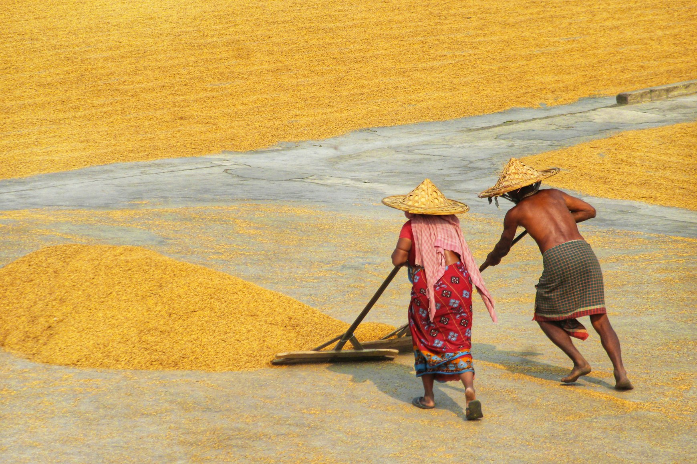
Tourists often move between Rajwada, Lal Bagh Palace, Sarafa Bazaar, and a handful of major attractions.
The city itself exists beyond those stops.
Morning vegetable markets provide a completely different perspective on daily life. Residential neighborhoods reveal architectural details invisible from major roads.
Small cafés attract students discussing exams, careers, politics, and cricket.
Indore is also one of central India’s major educational hubs.
That reality shapes the atmosphere.
The city feels younger than many travelers expect.
Modern coffee shops coexist with traditional snack vendors. New businesses appear constantly. Creative industries continue growing.
The result is a city that feels active rather than preserved.
You are observing a place still evolving.
Ralamandal Wildlife Sanctuary
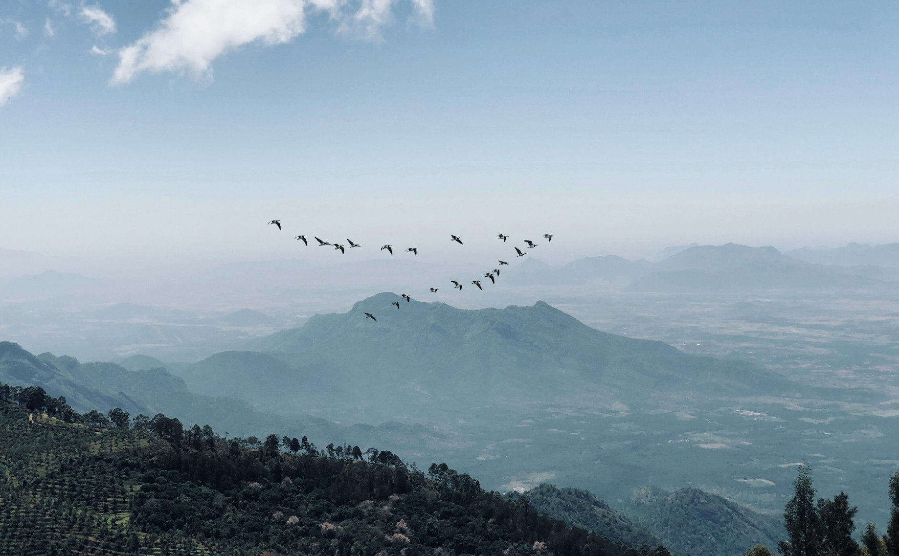
A short distance from the urban center, Ralamandal Wildlife Sanctuary offers a reminder of how quickly central India can change character.
The sanctuary combines forested hills, walking routes, and elevated viewpoints overlooking the surrounding landscape.
Visitors sometimes arrive expecting dramatic wildlife encounters.
That is not really the point.
The appeal lies in proximity.
Within a relatively short drive, traffic noise disappears and the horizon opens.
Morning visits tend to be the most rewarding, particularly during cooler months when visibility improves and the surrounding terrain appears at its clearest.
For residents, the sanctuary functions as a breathing space beyond the city.
For travelers, it provides context.
Indore is not isolated from nature. It exists inside a much larger geographical landscape.
Patalpani Waterfall
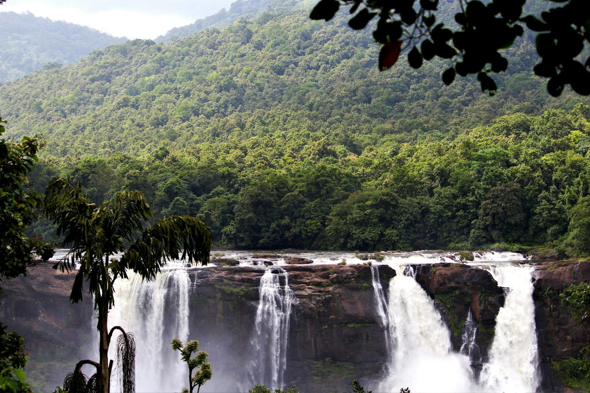
Around 35 kilometers from the city, Patalpani Waterfall becomes especially impressive during and immediately after the monsoon season.
Water plunges through a rocky gorge surrounded by green vegetation that contrasts sharply with the urban environment left behind.
During peak monsoon periods, authorities occasionally restrict access due to safety concerns and changing water levels, so conditions should always be checked before visiting.
The journey itself is part of the experience.
Roads gradually leave dense urban development behind and move into a quieter landscape of villages, fields, and low hills.
For travelers spending several days in Indore, Patalpani offers an easy transition from city exploration to natural scenery.
Mandu: The Day Trip That Usually Becomes the Highlight
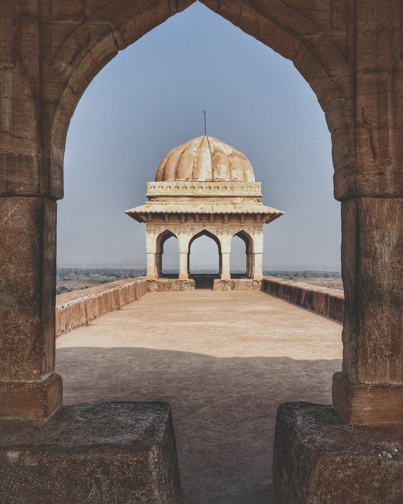
Nearly every city has a recommended excursion.
Few are as rewarding as Mandu.
Located roughly two hours from Indore, this former fortified city spreads across a plateau filled with palaces, gateways, reservoirs, pavilions, and centuries of layered history.
The atmosphere feels completely different from Rajasthan’s better-known forts.
Mandu is quieter.
More open.
More connected to the surrounding landscape.
The most famous structure is the Rani Roopmati Pavilion, positioned high above the plains.
The view stretches outward across enormous distances, especially during clear weather.
Nearby stands Baz Bahadur’s Palace, associated with one of the region’s most enduring historical stories.
What makes Mandu memorable is scale.
Not the scale of individual buildings.
The scale of space.
Ruins emerge from vegetation. Roads connect isolated monuments. Large sections remain peaceful even during busy travel seasons.
Visitors frequently arrive expecting a quick excursion.
Many leave wishing they had stayed longer.
And perhaps that describes Indore itself.
People rarely place it at the top of their India itineraries.
They visit because it is nearby.
Because it fits between larger destinations.
Because they have heard it is clean.
Then the city gradually reveals something more interesting.
Not a collection of famous landmarks.
A way of urban life that feels unexpectedly balanced.
Clean but not sterile.
Historic but not frozen.
Energetic without becoming exhausting.
And in a country where travelers often expect intensity above all else, that balance can be surprisingly memorable.